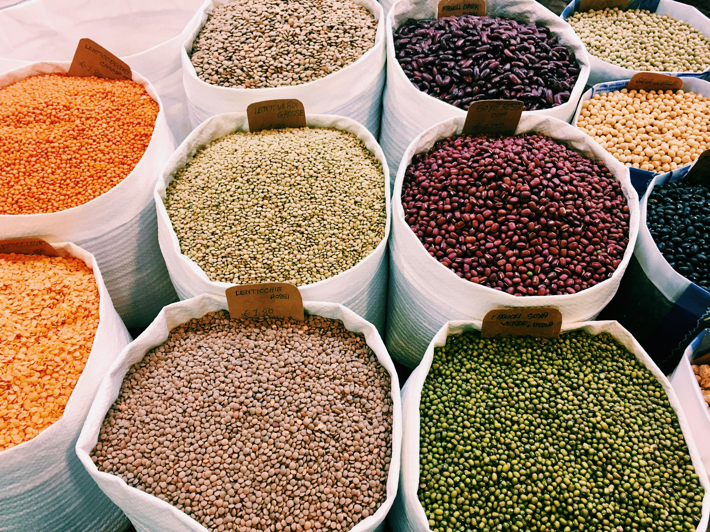
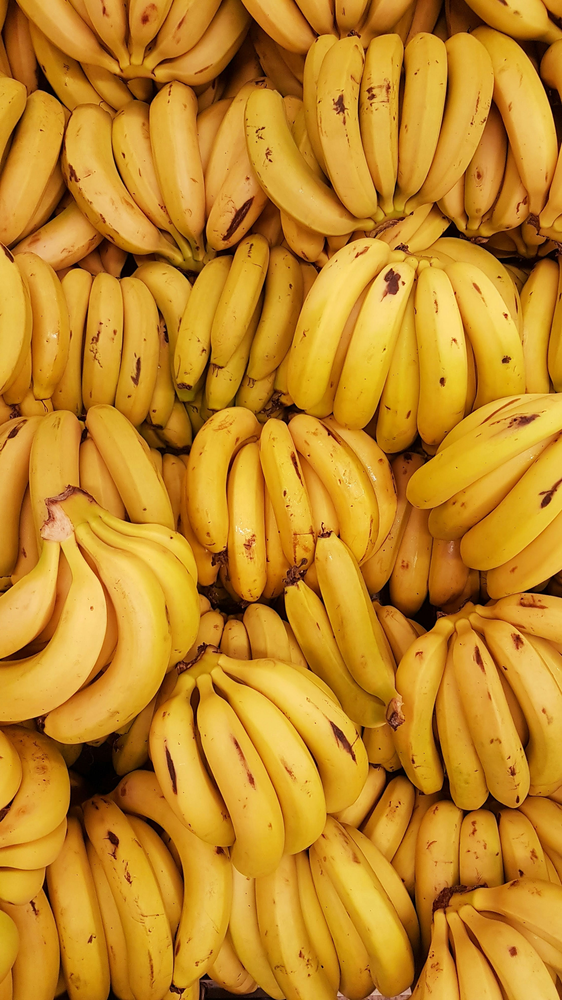

About AgriLink
AgriLink is an agricultural marketplace that connects farmers, buyers, retailers, and logistics partners through one simple online platform.
We help farmers reach more customers while allowing buyers to easily discover quality agricultural products.
What We Offer
Agricultural Products Available
AgriLink connects buyers with farmers offering fresh and high-quality agricultural products.

Cassava
Fresh cassava harvested from local farms.

Beans
Nutritious beans available in different varieties.

Maize
High-quality maize suitable for food and animal feed.

Irish Potatoes
Fresh potatoes supplied directly by farmers.

Tomatoes
Fresh tomatoes ready for markets and restaurants.

Bananas
Sweet and fresh bananas from trusted growers.
Sample Market Prices
| Product | Unit | Price (RWF) |
|---|---|---|
| Cassava | 1 Kg | 600 |
| Beans | 1 Kg | 900 |
| Maize | 1 Kg | 700 |
| Irish Potatoes | 1 Kg | 500 |
| Tomatoes | 1 Kg | 800 |
| Bananas | 1 Bunch | 2,500 |
- Direct communication between farmers and buyers
- Product listings for agricultural goods
- Simple registration process
- Reliable networking opportunities
- Fast access to agricultural markets
Who Can Join?
- Farmers
- Buyers
- Retailers
- Vendors
- Agricultural Organizations
- Transport & Logistics Partners
Platform Highlights
500+
Farmers
300+
Buyers
1000+
Products
24/7
Accessibility
Why Choose AgriLink?
- Easy to use interface
- Fast communication
- Trusted agricultural community
- Secure registration
- Supports local farming businesses
What Users Say
"AgriLink helped me connect with buyers much faster than before."
- Local Farmer
"Finding fresh agricultural products has never been easier."
- Retail Buyer
Our Vision
To build a modern agricultural community where technology improves communication, accessibility, transparency, and economic opportunities for everyone involved in agriculture.
Ready to Join AgriLink?
Register today and become part of a growing agricultural marketplace.
Join AgriLink